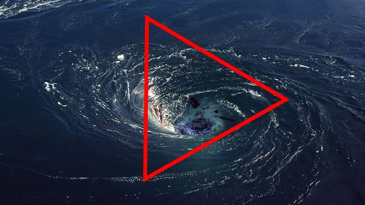
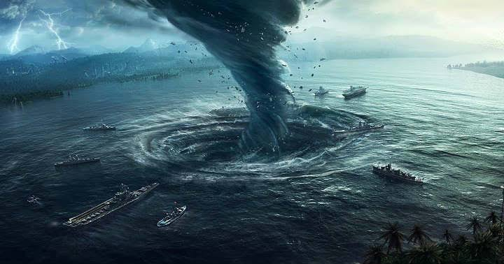
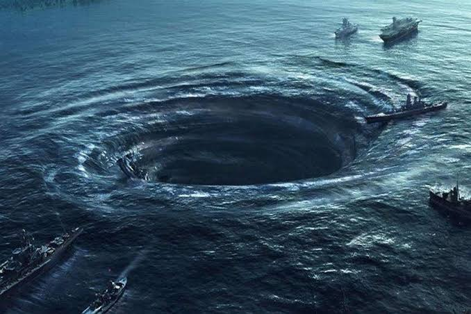

The Bermuda Triangle (aka Devil's Triangle) is an area bounded by points in Bermuda, Florida and Puerto Rico where ships and planes are said to mysteriously vanish into thin air or deep water.
90% of planes and ships went through the Bermuda Triangle and were never seen again. Those who survived, some of them lost the memory of it and the rest don't know what happened to them exactly. Over the years, many theoies have been offered to explain the mystery...
Like rogue tidal waves being the cause, some suggestions included they were time portals, some theories were based on the appearance of strange lights in the area around the triangle
Others believe that these lights are the small craft of extraterrestrials. They believe that they are using the Bermuda Triangle as a communication tool to communicate with the human race.
The truth about the triangle may never be revealed, or there may never be an answer to the mystery, but it's up to us to keep knowing more about the things around us.
Like the Bermuda triangle, she swallowed her victims whole
Beware of the boss; they are like the Bermuda triangle, you have to die clueless
The most famous loss in the triangle is known as the mystery of Flight 19 and happened on 5th December 1945. A squadron of five US Navy Avenger torpedo bombers set off from their base in Fort Lauderdale, Florida to conduct a practice mission over the island of Bimini. The flight contained 14 men, all of them students apart from the commander, Lt. Charles Taylor. About an hour and a half after the mission began, radio operators received a signal from Taylor saying his compasses were not working, but he believed he was over the Florida Keys. He was advised to fly north which would bring him back to the mainland. In fact, he was over the Bahamas, and his attempts to head north and north-east merely took him further away from solid ground.
A terrible storm that day hampered communications and it seems Taylor rejected a suggestion to pass control of the squadron to one of the other pilots. Radio contact was entirely lost and search craft were dispatched to try and find the flight to guide them back in. Of the three planes used to rescue Flight 19, one lost communications itself because of an iced over aerial, one was just unsuccessful whilst another seemed to explode shortly after take-off. Flight 19 itself has never been found, but it is assumed that they ditched into the raging sea when their fuel ran out, with the heavy planes rapidly sinking to the ocean floor. Something similar to what might have happened to Malaysia Flight MH370?
In 1945, 6 US Navy bombers disappeared and so did those sent to rescue them. Before the 27 men vanished, 1 pilot reported “Everything looks strange. Even the ocean.” – Source: Live Science.
Columbus’s ship floated on still waters through the Triangle in 1492. He documented unusual compass readings and a fireball in the sky. – Source: The Bermuda Triangle by Aaron Rosenberg/National Geographic
More than 1000 lives have been lost in the Bermuda Triangle over the last century. On average, 4 aircraft and 20 yachts go missing every year. – Source: Into the Bermuda Triangle by Gian Quassar.
Pilot Bruce Gernon claims he lost 28 minutes after flying through a time-warping cloud tunnel. The plane went missing from radars, only to re-emerge in Miami Beach. – Source: The Fog by Bruce Gernon.
Below are a few lists of books and their authors written about the "Devil's Triangle" and where to get the books